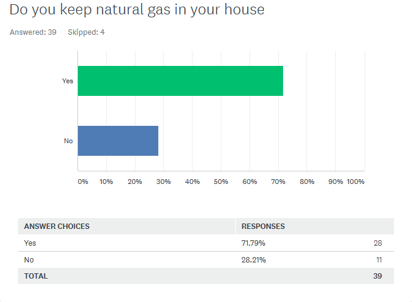
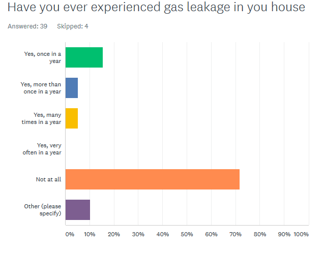
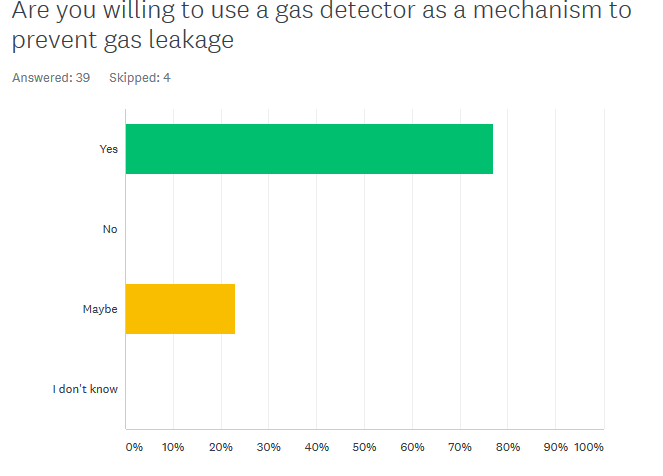

Natural gas is considered to be among the greatest discoveries of mankind. Indeed, it has proven to be fundamentally useful over the years, for example it is used in industries as a fuel for process heating, powering systems, production of chemicals,fertilisers and hydrogen.It is also used in generation of electricity, used for cooking in form of liquefied petroleum gas also known as LPG and many others.
Overview
Despite its numerous uses, natural gas has proven to be quite hazardous. Gas leakages may not be very common but they pose a significant threat. If tiny amounts of gas are left to collect in an area, an explosion is mostly likely bound to occur. Additionally, when people are exposed to large amounts of gas, they may suffer illness or suffocation that can lead to untimely death. Lastly, while natural gas doesn’t emit the same amount of greenhouse gases as other fossil fuels, it releases carbon dioxide that is a greenhouse gas which contributes to global warming.
How it Works
To use the gas Leakage Dector, place it in a preferred room especially where gas containers are kept. Install the gas free app onto your mobile device. At first launch, one will be required to enter their personal details especially the device Id that comes with the gas detector. Otherwise if the user already has an account, they can just login and will be redirected to home page.
The home page has a circular bar showing current gas concentration in the atmosphere or room where the gas leakage detector has been placed.
Data Analysis and Survey
In a survey we carried out online, some of the results collected are as follows but the actual results can be viewed from here.
  The user can view their weekly gas amounts in the application in form of graphs and also a history of gas alerts or activity of the application from the analytics screen.